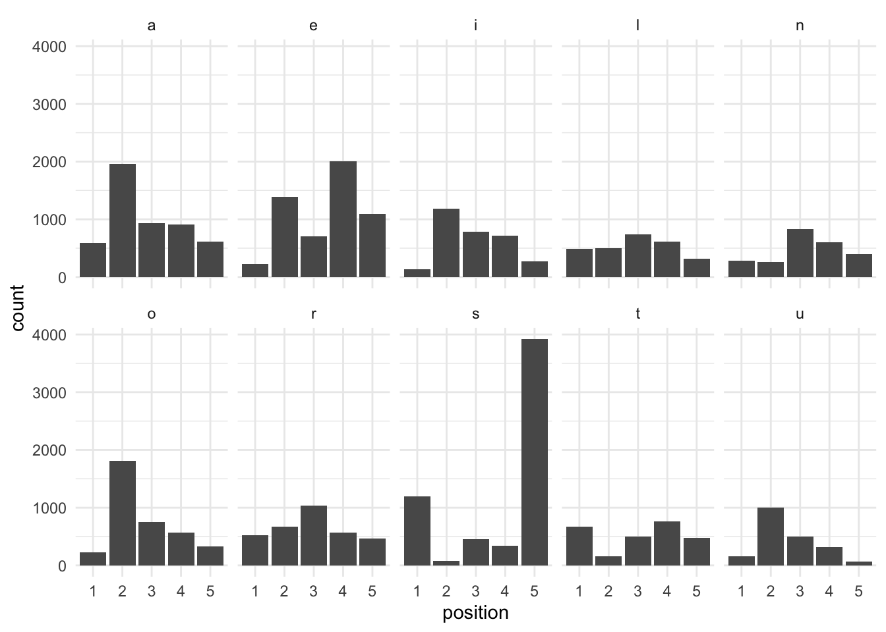

Like much of the internet, I have been fascinated with the game Wordle. For those unaware, the basic premise is to guess a five letter word in less than six attempts. Unlike many such games, there is no initial clue. Your first guess is made blind, and then refined in subsequent rounds based on whether the letter was:
- In the correct position,
- In the word, but in the incorrect position,
- Not in the word.
It’s a simple mechanic, and quite fun. Part of the appeal comes from the fact that it’s really a logic game. Since the potential solution space becomes very small very quickly; intelligent early guesses can remove vast swathes of dictionary from consideration. So the key question is; what are the best words to guess first?
0. Data, and Data Cleaning
The first step is getting a list of words and cutting it down to size. A cursory inspection of the wordle javascript reveals that it includes two dictionaries. Without looking too closely, the first one appears to be a list of 2,300 or so simple words which I am assuming is an answer list, and the other is a (several times larger) list of real english words that are valid guesses but (I assume) won’t ever be correct answers. To keep things sporting, we’ll use the second list.
First up, load the word list. We’ll also get a count of all the letters in each word, which we’ll use later.
# Libraries
require(tidyverse)
require(stringi)
require(rmarkdown)
# Clean
words = words %>% # We've loaded this from a text file off-screen
filter(str_length(word) == 5) %>%
# There's definitely a more efficient way of doing this, but this works for now.
mutate(a = stri_count_fixed(word, pattern = "a"),
b = stri_count_fixed(word, pattern = "b"),
c = stri_count_fixed(word, pattern = "c"),
d = stri_count_fixed(word, pattern = "d"),
e = stri_count_fixed(word, pattern = "e"),
f = stri_count_fixed(word, pattern = "f"),
g = stri_count_fixed(word, pattern = "g"),
h = stri_count_fixed(word, pattern = "h"),
i = stri_count_fixed(word, pattern = "i"),
j = stri_count_fixed(word, pattern = "j"),
k = stri_count_fixed(word, pattern = "k"),
l = stri_count_fixed(word, pattern = "l"),
m = stri_count_fixed(word, pattern = "m"),
n = stri_count_fixed(word, pattern = "n"),
o = stri_count_fixed(word, pattern = "o"),
p = stri_count_fixed(word, pattern = "p"),
q = stri_count_fixed(word, pattern = "q"),
r = stri_count_fixed(word, pattern = "r"),
s = stri_count_fixed(word, pattern = "s"),
t = stri_count_fixed(word, pattern = "t"),
u = stri_count_fixed(word, pattern = "u"),
v = stri_count_fixed(word, pattern = "v"),
w = stri_count_fixed(word, pattern = "w"),
x = stri_count_fixed(word, pattern = "x"),
y = stri_count_fixed(word, pattern = "y"),
z = stri_count_fixed(word, pattern = "z"))1. What Letters?
Our first two words allow us to rule-in or rule-out 10 letters, which should let us clear the vowels and a few key consonants. Which ones exactly can be worked out pretty easily: what are the 10 most common letters in the Wordle dictionary?
This bit of code takes our letter columns (we drop the singular column containing the full word for this exercise), takes the total sum of each column (how many times each letter appearing in our word list), and sorts them in descending order. The result is a little surprising, with ‘u’ as the lonely vowel not making the top-ten cut.
sort(letters) [1] "a" "d" "e" "i" "l" "n" "o" "r" "s" "t"If we did into this a little more, we see why:
s e a o r i l t n d u m p y c h
5996 5429 5011 3684 3259 3088 2652 2566 2377 2060 2044 1660 1652 1649 1551 1371
b g k f w v z j x q
1346 1333 1295 885 844 541 394 264 251 83 U is only slightly less common than d; and the standard wisdom of word construction would suggest that it’s better to know the presence or absence of all the vowels. We’ll make an executive decision here to include it, and drop the d to keep up at a round 10.
2. What Words?
The next part is also pretty simple; we want to cut our list of all words down to just those that use the letters in our top 10. We also want to avoid any duplicates so we can cover off all of the most common letters in our first two guesses.
good_words = words %>%
rowwise() %>%
mutate(sum = sum(across(all_of(letters)))) %>% # sum of good letters
ungroup() %>%
filter(sum == 5) %>% # drop those without a 5
filter(across(all_of(letters), ~ .x %in% c(1, 0))) %>% # drop those with more than one of each letter
select(word)
good_words# A tibble: 407 × 1
word
<chr>
1 aeons
2 aeros
3 aesir
4 airns
5 airts
6 aitus
7 aline
8 alist
9 aloes
10 aloin
# ℹ 397 more rowsThis is a pretty reasonable result - we’ve cut down our list to a tenth of the size and with a little more work we could match up pairs of words that don’t contain shared letters. But, there’s still a little more optimisation that we can do first.
3. … Where Letters?
The second (and more interesting!) part of this process is where the letters should go. Letter frequency isn’t uniformly distributed throughout words; lots of words tend to end with ‘s’, for example. Our best guesses should adjust for this too.
common_pos = words[1] %>%
separate(col = word, into = c("1", "2", "3", "4", "5"), sep = c(1, 2, 3, 4), remove = FALSE) %>%
select(-word) %>%
pivot_longer(everything(), names_to = "position", values_to = "letter") %>%
group_by(position, letter) %>%
filter(letter %in% letters) %>%
summarise(count = n())The above block splits our word list into columns of each letter, and sums the frequency of letters in each column. We’ve used the full word list rather than our list of ideal words because the distribution of letters are different (and the results won’t always be from the ideal words), but then filter the final list to only ideal letters.
We then plot a histogram of letter frequency by position in the word; geom_col() is used rather than geom_histogram() because we’ve already calculated the column count and don’t need ggplot2 to do it for us.
letter_hist = common_pos %>%
ungroup() %>%
ggplot(aes(x = position,
y = count)) +
facet_wrap(~letter, ncol = 5) +
geom_col() +
theme_minimal()
letter_hist
We can now cull our list of good words further into those with the most optimal (or, at least, not sub-optimal) letter positions. I’ve adjusted this manually because of the importance of vowel position, though you could define some logic to do it programmatically as well; this is left as an exercise to the reader.
best_words = good_words %>%
separate(col = word, into = c("1", "2", "3", "4", "5"), sep = c(1, 2, 3, 4), remove = FALSE) %>%
filter(grepl("l|r|s|t", `1`),
grepl("a|l|o|r|u", `2`),
grepl("a|i|l|n|r|u", `3`),
grepl("a|e|i|l|n|t", `4`),
grepl("s|n", `5`))
rmarkdown::paged_table(best_words[1])4. Combinations
Lastly, we take our list of best words, cross them to make a list of all possible combinations, and then cut that list down to a combination that contains only one of each of the high-yield letters, in a high-yield position.
best_combinations = list(first = best_words$word,
second = best_words$word) %>%
cross() %>%
map_df(as_tibble) %>%
mutate(word = paste(first, second, sep = ""),
a = stri_count_fixed(word, pattern = "a"),
e = stri_count_fixed(word, pattern = "e"),
i = stri_count_fixed(word, pattern = "i"),
l = stri_count_fixed(word, pattern = "l"),
n = stri_count_fixed(word, pattern = "n"),
o = stri_count_fixed(word, pattern = "o"),
r = stri_count_fixed(word, pattern = "r"),
s = stri_count_fixed(word, pattern = "s"),
t = stri_count_fixed(word, pattern = "t"),
u = stri_count_fixed(word, pattern = "u")) %>%
filter(across(-c(first, second, word), ~ . == 1)) %>%
select(first, second)
knitr::kable(best_combinations,
col.names = c("First Word", "Second Word"))| First Word | Second Word |
|---|---|
| tails | rouen |
| rouen | tails |
There we have it! An unlikely combination.